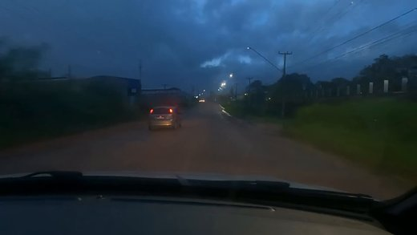

00:01:56.074
Um carro segue com luzes traseiras acesas pela pista úmida ainda escura, sob nuvens azuladas e postes de iluminação.
Santarém (PA) · confirmado
Na saída de Santarém, os viajantes comentam o piso molhado e anunciam a passagem pela região da hidrelétrica de Curuá-Una.
Transcrição · 00:01:48 | 00:01:57 | 00:02:03
Turismo Aqui — quadro de vídeo publicado no YouTube